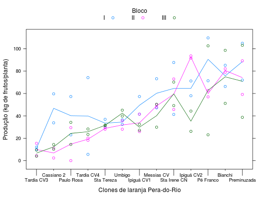

Ensaio de competição de 13 clones de laranja Pera-do-Rio onde foram obtidos os resultados de produção, em kg de frutos planta, para o ano de 1987, em que as plantas estavam com 16 anos de idade. O ensaio foi conduzido pelo Dr. Joaquim Teófilo Sobrino em delineamento de blocos ao acaso na Estação Experimental de Limeira, do IAC.
Um data.frame com 78 observações e 4 variáveis, em que
clonblocplanprodBARBIN (2013), Exercício 9, pág. 203.
O dataset BarbinEx10 resulta de uma agregação dos
dados do BarbinEx9 que está disponível na seção Examples.
library(latticeExtra) data(BarbinEx9)#> Warning: data set ‘BarbinEx9’ not foundstr(BarbinEx9)#> 'data.frame': 78 obs. of 4 variables: #> $ clon: Factor w/ 13 levels "Umbigo","Pé Franco",..: 1 2 3 4 5 6 7 8 9 10 ... #> $ bloc: Factor w/ 3 levels "I","II","III": 1 1 1 1 1 1 1 1 1 1 ... #> $ plan: int 1 1 1 1 1 1 1 1 1 1 ... #> $ prod: num 36.5 71.4 104.9 71.2 73.2 ...xyplot(prod ~ reorder(clon, prod), data = BarbinEx9, groups = bloc, type = c("p", "a"), xlab = "Clones de laranja Pera-do-Rio", ylab = "Produção (kg de frutos/planta)", auto.key = list(columns = 3, title = "Bloco", cex.title = 1), scales = list(x = list(tck = c(1, 0))), xscale.components = function(...) { ans <- xscale.components.default(...) ans$bottom$ticks$tck <- 1.8 * (ans$bottom$ticks$at %% 2 + 0.25) ans })BarbinEx10 <- aggregate(prod ~ bloc + clon, data = BarbinEx9, FUN = mean) i <- with(BarbinEx10, c(which(clon == "Tardia CV4" & bloc == "I"), which(clon == "Paulo Rosa" & bloc == "II"))) BarbinEx10$prod[i] <- NA